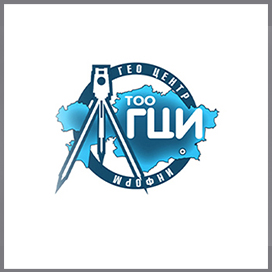
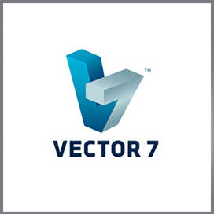
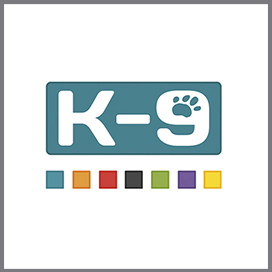
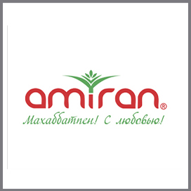

01
Видеть каждый рейс
Где находится машина, по какому маршруту ехала и где останавливалась. Ответы — на одной карте.
Маршруты и геозоныGLONASS NAVI · МОНИТОРИНГ ТРАНСПОРТА
Маршруты. Топливо. Работа техники. Всё, что нужно для уверенных решений — в одной системе. А оборудование можно не покупать: у нас есть аренда.
Сопоставляйте изменения в баке с рейсами. Показания зависят от датчика и его настройки.
Лента событий · пример
Настраивайте правила под ваш автопарк и реагируйте на события, которые важны бизнесу.
НАШИ КЛИЕНТЫ
Компании, представленные в разделе клиентов Glonass Navi.




ВЛАДЕТЬ НЕОБЯЗАТЕЛЬНО. УПРАВЛЯТЬ — ВАЖНО.
Возьмите оборудование в аренду и пользуйтесь мониторингом без покупки трекеров. Подберём комплект и согласуем условия под ваш автопарк.
Подходящий вариант, если вы хотите подключить мониторинг и взять оборудование в аренду.
Стоимость аренды, монтажа, обслуживания, срок и условия возврата фиксируются в предложении и договоре.
01 / Прозрачность в работе
Когда всё видно, проще управлять. Начните с задачи, которая сегодня стоит вашему бизнесу времени и денег.
Где находится машина, по какому маршруту ехала и где останавливалась. Ответы — на одной карте.
Маршруты и геозоныСопоставляйте заправки, остаток в баке и расход. Разбирайте подозрительные изменения по времени и месту.
GPS + датчик уровня топливаОтделяйте движение от стоянок и работы двигателя на холостом ходу. Находите резервы в загрузке техники.
Пробег и моточасыНастройте уведомления о превышении скорости, выезде за разрешённую зону и потере связи.
События и уведомленияДоступность функций зависит от модели трекера, подключённых датчиков и выбранной конфигурации.
02 / Решения под ваш бизнес
Подбираем состав оборудования и отчёты под реальные условия работы вашего автопарка.
Проверяйте фактические маршруты, время прибытия и остановки. Разбирайте спорные рейсы по истории поездок.
03 / Каждый литр имеет значение
Один GPS-трекер покажет маршрут. Комплект с датчиком уровня топлива поможет понять, что происходило в баке на этом маршруте.
ЗаправкиСравнивайте место, время и измеренный объём.
Изменения уровняПроверяйте резкие падения и причины отклонений.
Расход по рейсамСопоставляйте работу машин в похожих условиях.
Данные вместо догадокНачните с измерения, затем проверяйте изменения.
Иллюстрация возможностей, не результат клиента. Точность зависит от монтажа, тарировки бака и настройки системы.
04 / Посчитаем на ваших цифрах
Измените параметры и оцените сценарий сокращения расходов на топливо. Без обещаний одинакового результата для всех.
10 машин × 150 000 ₸ × 10%
Обсудить расчёт для моего паркаОценка до вычета стоимости оборудования, установки и обслуживания. Не является прогнозом доходности.
05 / Комплектация без лишнего
Стоимость рассчитываем под парк. В предложении разделяем оборудование, монтаж и регулярные платежи.
Когда важно видеть маршруты и использование машин.
Когда нужно сопоставить рейсы и реальные изменения в баке.
Для спецтехники, сложных условий и существующего оборудования.
Оборудование можно не покупать. Возьмите трекеры в аренду — условия подберём под ваш автопарк.
Узнать условия ↗06 / Glonass Navi
Продаём, устанавливаем и обслуживаем системы спутникового мониторинга в Алматы. Помогаем связать оборудование и данные с повседневной работой автопарка.
Познакомиться с командойТип техники, количество машин, маршруты и параметры, которые нужно контролировать.
Оборудование, монтаж, обслуживание и условия подключения — в предложении и договоре.
Подключаем трекеры и датчики, проверяем передачу данных и нужные отчёты.
Объясняем работу системы и остаёмся на связи по вопросам обслуживания.
07 / Полезно до подключения
Короткие руководства, которые помогут задать правильные вопросы и выбрать подходящее решение.
08 / Отвечаем по делу
Расскажите о своём транспорте.
Поможем разобраться в деталях.
Стоимость зависит от количества машин, выбранных трекеров, датчиков и сложности монтажа. В предложении отдельно укажем оборудование, установку и регулярное обслуживание. Отправьте параметры автопарка — подготовим комплектацию под вашу задачу.
Да. Подбираем решение как для одного автомобиля, так и для автопарка. Для начала достаточно рассказать, что вы хотите контролировать: маршруты, использование транспорта или топливо.
Для измерения уровня топлива применяют датчик уровня топлива (ДУТ) или совместимые данные CAN-шины. Расход также можно оценивать расчётным методом, но он не заменяет измерение в баке. Способ подбирается по автомобилю и требуемой задаче.
Онлайн-обновление зависит от связи. Совместимый трекер с внутренней памятью может сохранять точки маршрута и передать их после восстановления соединения. Объём памяти и поддерживаемые режимы зависят от модели — уточним при подборе.
Проверим модель, протокол передачи данных, состояние оборудования и доступ к настройкам. Если трекер совместим с платформой и задачами, обсудим переподключение без его замены.
Да, для платформы Navixy доступны мобильные приложения. Поможем выбрать приложение и настроить доступ. Набор данных зависит от установленного оборудования, тарифа и прав пользователя.
Да, на действующем сайте Glonass Navi предусмотрены аренда и продажа GPS-оборудования. Актуальные условия, стоимость и состав комплекта уточним в индивидуальном предложении.
Glonass Navi работает в Алматы. Укажите город и расположение техники: согласуем возможность, место и сроки монтажа. Доступность выезда в другие регионы уточняется отдельно.
ВАШ СЛЕДУЮЩИЙ ШАГ
Расскажите о своём автопарке — обсудим задачи и подготовим состав решения. Вы поймёте, какое оборудование нужно и за что платите.